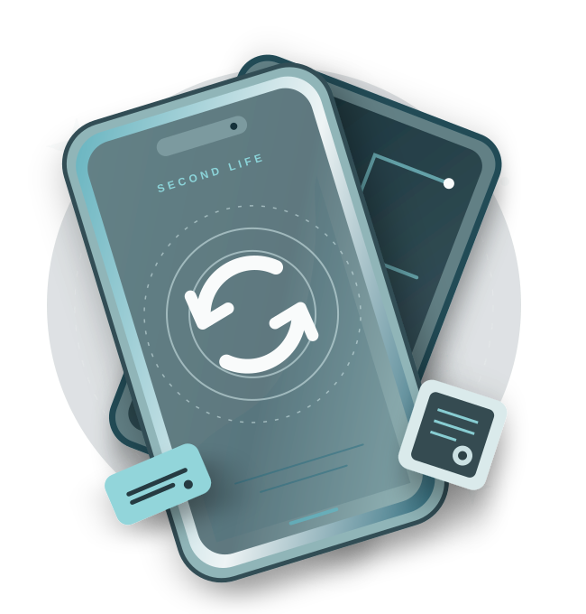

OUR HISTORY
1996
From the first local recycling points of the 1990s to today's electronic-waste solutions. Discover how Slovenia is learning to waste less and give technology a second life.

In Slovenia, waste collection has changed enormously. But separating waste, recycling materials and reusing a working device are three different things. This exhibition shows the difference, using published statistics and examples from our own region.
Our focus is SDG 12 — responsible consumption and production — and the electronics we use every day.
About UN Goal 12 ↗Travel through verified milestones. Select a year to see what changed — and where the information comes from.
The 1996 milestone is a documented example from Slovenj Gradec, not a claim that Slovenia introduced its first ever recycling point that year. National time-series statistics below begin in 2005.
These figures are real — and they measure different things. Explore them, then test whether you can interpret them correctly.
Nearly three quarters of municipal waste was collected separately in Slovenia in 2025.
This shows waste collected by material type, not the percentage actually recycled.
Local infrastructure is what turns environmental goals into everyday choices. Here are the places and practices we want to document ourselves.
ZEOS and Komunala Nova Gorica opened a reuse corner at the CERO Nova Gorica collection centre for electrical and electronic appliances that still work. [5]
Read the city's announcement ↗![Illustrated concept of an outdoor electronics reuse station with teal and yellow signs]()
In the Nova Gorica area, Komunala describes collection centres, ecological islands and small blue battery compartments on updated street containers. Not every street bin accepts every electrical item. Always check the label and the current operator's instructions. [6]
Three photographs by each student. We will document local bins, collection points, repairs, old electronics and the people behind the story.
For the final submission: illustrations are clearly labelled demo. Replace all 6 with your own photos (3 per student) using gallery-data.js. Local feature cards above automatically reuse three of these photos.
A hands-on sorting challenge inspired by Slovenian waste collection. Every round features 12 randomly chosen items, six destinations and an explanation for every decision.
Drag the item onto a destination, or simply tap a bin.
Know your local rules: these are educational examples based on Komunala Nova Gorica and ZEOS. The colours of real bins and accepted waste can vary by site. Always check container labels; do not put damaged or swollen batteries into street bins.
Three evidence-based activities. Every answer comes with an explanation, and every dataset or waste rule can be checked in the sources.
Interpret real Slovenian data. A correct answer matters less than understanding why.
Learning scenarios are educational examples based on published guidelines. If a device is damaged or has a swollen battery, stop using it and follow specialist safety advice.
Good decisions start before the bin. A repair, a second owner or a longer useful life can make a difference.
Keep it longer.
Protect and maintain the devices you already own.
Repair or reuse first.
If an appliance still works, consider passing it on.
Separate it safely.
Use the collection route appropriate for the device.
Question the numbers.
Check the year, the source and what each statistic measures.
These are our observations from Slovenia, told through our own images, research and videos.
Historical research, first three photographs and front-page storytelling.
assets/videos/student-a.mp4Local examples, second three photographs and interactive learning.
assets/videos/student-b.mp4Facts are cited and dated. This is a student exhibition, not an official government website.
Method note: SURS figures refer to nationwide municipal waste. ZEOS figures refer to amounts collected within one producer responsibility scheme. Collection and recycling are not interchangeable, and changes in methods can affect long-term comparisons. Local bin locations and accepted items should be checked before visiting.